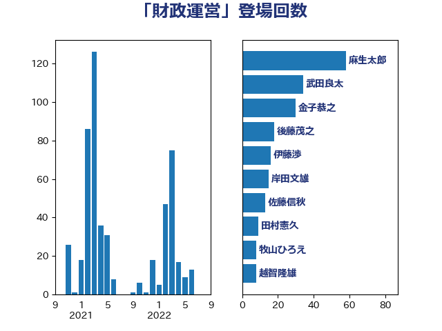

単語「財政運営」

| 麻生太郎 | 自由民主党 | 58 回 |
| 武田良太 | 自由民主党 | 34 回 |
| 金子恭之 | 自由民主党 | 30 回 |
| 後藤茂之 | 自由民主党 | 18 回 |
| 伊藤渉 | 公明党 | 16 回 |
| 岸田文雄 | 自由民主党 | 15 回 |
| 佐藤信秋 | 自由民主党 | 13 回 |
| 田村憲久 | 自由民主党 | 9 回 |
| 牧山ひろえ | 立憲民主党 | 8 回 |
| 越智隆雄 | 自由民主党 | 8 回 |
| 山際大志郎 | 自由民主党 | 7 回 |
| 鈴木俊一 | 自由民主党 | 7 回 |
| 古賀友一郎 | 自由民主党 | 6 回 |
| 菅義偉 | 自由民主党 | 6 回 |
| 加藤鮎子 | 自由民主党 | 5 回 |
| 川田龍平 | 立憲民主党 | 4 回 |
| 櫻井周 | 立憲民主党 | 4 回 |
| 田村まみ | 国民民主党 | 4 回 |
| 鈴木庸介 | 立憲民主党 | 4 回 |
| 高木毅 | 自由民主党 | 4 回 |
| 中西健治 | 自由民主党 | 3 回 |
| 小渕優子 | 自由民主党 | 3 回 |
| 山東昭子 | 自由民主党 | 3 回 |
| 岡本三成 | 公明党 | 3 回 |
| 本田太郎 | 自由民主党 | 3 回 |
| 泉健太 | 立憲民主党 | 3 回 |
| 井坂信彦 | 立憲民主党 | 2 回 |
| 井林辰憲 | 自由民主党 | 2 回 |
| 宮路拓馬 | 自由民主党 | 2 回 |
| 新谷正義 | 自由民主党 | 2 回 |
| 柳ヶ瀬裕文 | 日本維新の会 | 2 回 |
| 熊田裕通 | 自由民主党 | 2 回 |
| 田畑裕明 | 自由民主党 | 2 回 |
| 笠井亮 | 日本共産党 | 2 回 |
| 船橋利実 | 自由民主党 | 2 回 |
| 落合貴之 | 立憲民主党 | 2 回 |
| 赤澤亮正 | 自由民主党 | 2 回 |
| 足立敏之 | 自由民主党 | 2 回 |
| 階猛 | 立憲民主党 | 2 回 |
| 音喜多駿 | 日本維新の会 | 2 回 |
| 馬淵澄夫 | 立憲民主党 | 2 回 |
| 高木宏壽 | 自由民主党 | 2 回 |
| 黄川田仁志 | 自由民主党 | 2 回 |
| こやり隆史 | 自由民主党 | 1 回 |
| 下村博文 | 自由民主党 | 1 回 |
| 中島克仁 | 立憲民主党 | 1 回 |
| 中川正春 | 立憲民主党 | 1 回 |
| 五十嵐清 | 自由民主党 | 1 回 |
| 佐藤啓 | 自由民主党 | 1 回 |
| 前原誠司 | 国民民主党 | 1 回 |
| 加藤勝信 | 自由民主党 | 1 回 |
| 勝部賢志 | 立憲民主党 | 1 回 |
| 吉良よし子 | 日本共産党 | 1 回 |
| 和田義明 | 自由民主党 | 1 回 |
| 大家敏志 | 自由民主党 | 1 回 |
| 守島正 | 日本維新の会 | 1 回 |
| 安達澄 | 無所属 | 1 回 |
| 山田美樹 | 自由民主党 | 1 回 |
| 山田賢司 | 自由民主党 | 1 回 |
| 岡本あき子 | 立憲民主党 | 1 回 |
| 平将明 | 自由民主党 | 1 回 |
| 梶山弘志 | 自由民主党 | 1 回 |
| 武井俊輔 | 自由民主党 | 1 回 |
| 武部新 | 自由民主党 | 1 回 |
| 浜地雅一 | 公明党 | 1 回 |
| 海江田万里 | 立憲民主党 | 1 回 |
| 湯原俊二 | 立憲民主党 | 1 回 |
| 牧島かれん | 自由民主党 | 1 回 |
| 玄葉光一郎 | 立憲民主党 | 1 回 |
| 玉木雄一郎 | 国民民主党 | 1 回 |
| 田中英之 | 自由民主党 | 1 回 |
| 田島麻衣子 | 立憲民主党 | 1 回 |
| 石井章 | 日本維新の会 | 1 回 |
| 石垣のりこ | 立憲民主党 | 1 回 |
| 石川大我 | 立憲民主党 | 1 回 |
| 石川香織 | 立憲民主党 | 1 回 |
| 石橋通宏 | 立憲民主党 | 1 回 |
| 石田昌宏 | 自由民主党 | 1 回 |
| 礒崎哲史 | 国民民主党 | 1 回 |
| 福田昭夫 | 立憲民主党 | 1 回 |
| 稲富修二 | 立憲民主党 | 1 回 |
| 竹内譲 | 公明党 | 1 回 |
| 美延映夫 | 日本維新の会 | 1 回 |
| 若松謙維 | 公明党 | 1 回 |
| 若林健太 | 自由民主党 | 1 回 |
| 萩生田光一 | 自由民主党 | 1 回 |
| 薗浦健太郎 | 自由民主党 | 1 回 |
| 藤巻健太 | 日本維新の会 | 1 回 |
| 西村康稔 | 自由民主党 | 1 回 |
| 西銘恒三郎 | 自由民主党 | 1 回 |
| 進藤金日子 | 自由民主党 | 1 回 |
| 重徳和彦 | 立憲民主党 | 1 回 |
| 高村正大 | 自由民主党 | 1 回 |
| 高野光二郎 | 自由民主党 | 1 回 |